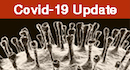

Clinical Outcome of Eosinophilia in Patients with COVID-19: A Controlled Study
Eosinophilia and COVID -19
Keywords:
Eosinophils, COVID19, C-reactive protein, white blood cells count, severity, outcome.Abstract
Background: Eosinophils can be considered as multifunctional leukocytes that contribute to various physiological and pathological processes depending on their location and activation status. There are emerging eosinophil-related considerations concerning COVID-19. Variable eosinophil counts have been reported during COVID-19. Whether these changes are related to the primary disease process or due to immunomodulation induced by the treatment has not yet been elucidated. Aim of the study: To describe changes in the differential leukocyte counts including eosinophils, in a cohort of symptomatic patients with confirmed COVID-19 and to correlate these changes, if any, with the severity of the disease. Patients and methods: We recorded the clinical data, lab findings, including inflammatory markers and leukocyte and differential count, course of the disease and severity score in 314 confirmed symptomatic cases of COVID-19. Results: Laboratory tests revealed that 28.7 % (n =86) had mild eosinophilia (eosinophil count > 500 <1,500/µL). Thirty-four patients (11.3%) had elevated absolute neutrophil count (ANC) (>8,000/µL), and 7 (2.3%) had decreased ANC (< 1,500/µl). Seven patients (2.3%) had lymphopenia (<1,000/µL) and 4 (4.67%) had lymphocytosis (> 4,000/µL). C-reactive protein (CRP) was elevated in 83 patients (27.6%). Chest X-Ray changes included: increased broncho vascular markings (38%), ground-glass opacity (GGO) pneumonitis (19.3%), lobar consolidation (5%), bronchopneumonia (8.3%), nodular opacity (1%), acute respiratory distress syndrome (ARDS) (2.3%), pleural effusion (1.0%) and other atypical findings (6.6%). Patients with eosinophilia had significantly lower CRP, and lower % of GGO, lobar and bronchopneumonia and ARDS in their chest images compared to patients without eosinophilia (p: <0.05). They also had a lower requirement for a hospital stay, ICU admission, mechanical ventilation, and oxygen supplementation versus patients without eosinophilia (p: <0.05). The eosinophils count was correlated negatively with the duration of ICU admission, mechanical ventilation, and oxygen supplementation and with CRP level (r: - 0.34, -0.32, -0.61 and - 0.39, respectively) (p: < 0.01).Conclusions: Our study reports a relatively high prevalence of eosinophilia in symptomatic COVID-19 positive patients. Patients with eosinophilia had a lower level of CRP, milder clinical course and better disease outcomes compared to those without eosinophilia. Our findings indicated a protective role of eosinophils in mitigating the severity of inflammatory diseases through an inhibitory mechanism, as evidenced by lower CRP. This protective role of eosinophils needs to be validated by further prospective studies.
References
World Health Organization. Clinical management of severe acute respiratory infection when novel coronavirus ( 2019-nCoV) infection is suspected: interim guidance, 28 January 2020. 2020, World Health Organization.
Kita H. Eosinophils: multifaceted biological properties and roles in health and disease. Immunol Rev. 2011;242:161-177.
Rosenberg HF, Dyer KD, Foster PS. Eosinophils: changing perspectives in health and disease. Nat Rev Immunol. 2013;13:9-22.
Rothenberg ME. Eosinophilia. N Engl J Med. 1998;338:1592-1600.
Weller PF, Klion AD, Feldweg AM. Approach to the patient with unexplained eosinophilia. In: Mahoney DH, Bochner DS (Eds.) UpToDate, Waltham (MA), 2014.
Zini G. Abnormalities in leukocyte morphology and number. In: Blood and bone marrow pathology. Churchill Livingstone Philadelphia. 2011, pp. 247-261.
World Health Organization. Coronavirus disease (COVID-19) technical guidance. WHO (Accessed on March 4, 2020). Online Version, 2020.
Charlson ME, Pompei P, Ales KL, MacKenzie CR. A new method of classifying prognostic comorbidity in longitudinal studies: development and validation. J Chronic Dis.1987;40:373-383.
Hung IF, Lung KC, Tso EY, et al. Triple combination of interferon beta-1b, lopinavir-ritonavir, and ribavirin in the treatment of patients admitted to hospital with COVID-19: an open-label, randomised, phase 2 trial. Lancet. 2020;395:1695-1704.
World Health Organization. Solidarity” clinical trial for COVID-19 treatments. World Health Organization (WHO). Situation reports. Geneva: WHO.[Accessed: 5 Apr 2020]. Available from: https://www. who. int/emergencies/diseases/novel-coronavirus-2019/global-research-on-novel-coronavirus-2019-ncov/solidarity-clinical-trial-for-covid-19-treatments, 2020.
Trivedi A, Sharma S, Ashtey B. Investigational treatments for COVID-19. Pharmaceutical J. 23 JUN 2020. https://www.pharmaceutical-journal.com
Maidment I, Williams C. Drug-induced eosinophilia. Pharmaceutical J. l8 JAN 2000. https://www.pharmaceutical-journal.com.
Drake MG, Bivins-Smith ER, Proskocil BJ, et al. Human and Mouse Eosinophils Have Antiviral Activity against Parainfluenza Virus. Am J Respir Cell Mol Biol. 2016;55:387-394.
Nagase H, Okugawa S, Ota Y, et al. Expression and function of Toll-like receptors in eosinophils: activation by Toll-like receptor 7 ligand. J Immunol. 2003;171:3977-3982.
Wong CK, Cheung PF, Ip WK, Lam CW. Intracellular signaling mechanisms regulating toll-like receptor-mediated activation of eosinophils. Am J Respir Cell Mol Biol. 2007;37:85-96.
Du Y, Tu L, Zhu P, et al. Clinical Features of 85 Fatal Cases of COVID-19 from Wuhan. A Retrospective Observational Study. Am J Respir Crit Care Med. 2020;201:1372-1379.
Zhang JJ, Dong X, Cao YY, et al. Clinical characteristics of 140 patients infected with SARS-CoV-2 in Wuhan, China. Allergy. 2020;75:1730-1741.
Qian GQ, Yang NB, Ding F, et al. Epidemiologic and clinical characteristics of 91 hospitalized patients with COVID-19 in Zhejiang, China: a retrospective, multi-centre case series. QJM. 2020;113:474-481.
Liu F, Xu A, Zhang Y, et al. Patients of COVID-19 may benefit from sustained Lopinavir-combined regimen and the increase of Eosinophil may predict the outcome of COVID-19 progression. Int J Infect Dis. 2020;95:183-191.
Lippi G, Henry BM. Eosinophil count in severe coronavirus disease 2019 (COVID-19). QJM. Int J Med.2020;13: 511-512
Sheldon J, Riches P, Gooding R, Soni N, Hobbs JR. C-reactive protein and its cytokine mediators in intensive-care patients. Clin Chem. 1993;39:147-150.
Tang Y, Liu J, Zhang D, Xu Z, Ji J, Wen C. Cytokine Storm in COVID-19: The Current Evidence and Treatment Strategies. Front Immunol. 2020;11:1708. Published 2020 Jul 10. doi:10.3389/fimmu.2020.01708
Cag Y, Pacal Y, Gunduz M, et al. The effect of peripheral blood eosinophilia on inflammatory markers in asthmatic patients with lower respiratory tract infections. J Int Med Res. 2019;47:2452-2460.
Walsh GM. Antagonism of eosinophil accumulation in asthma. Recent Pat Inflamm Allergy Drug Discov. 2010;4:210-213.
Adamko DJ, Yost BL, Gleich GJ, Fryer AD, Jacoby DB. Ovalbumin sensitization changes the inflammatory response to subsequent parainfluenza infection. Eosinophils mediate airway hyperresponsiveness, m(2) muscarinic receptor dysfunction, and antiviral effects. J Exp Med. 1999;190:1465-1478.
Davoine F, Cao M, Wu Y, et al. Virus-induced eosinophil mediator release requires antigen-presenting and CD4+ T cells. J Allergy Clin Immunol. 2008;122:69-77.
Domachowske JB, Dyer KD, Bonville CA, Rosenberg HF. Recombinant human eosinophil-derived neurotoxin/RNase 2 functions as an effective antiviral agent against respiratory syncytial virus. J Infect Dis. 1998;177:1458-1464.
Dyer KD, Percopo CM, Fischer ER, Gabryszewski SJ, Rosenberg HF. Pneumoviruses infect eosinophils and elicit MyD88-dependent release of chemoattractant cytokines and interleukin-6. Blood. 2009;114:2649-2656.
Phipps S, Lam CE, Mahalingam S, et al. Eosinophils contribute to innate antiviral immunity and promote clearance of respiratory syncytial virus. Blood. 2007;110:1578-1586.
Guan WJ, Ni ZY, Hu Y, et al. Clinical Characteristics of Coronavirus Disease 2019 in China. N Engl J Med. 2020;382:1708-1720.
Li X, Xu S, Yu M, et al. Risk factors for severity and mortality in adult COVID-19 inpatients in Wuhan. J Allergy Clin Immunol. 2020;146:110-118.
Zhou F, Yu T, Du R, et al. Clinical course and risk factors for mortality of adult inpatients with COVID-19 in Wuhan, China: a retrospective cohort study. Lancet. 2020;395:1054-1062.
Hollenberg SM, Ahrens TS, Annane D, et al. Practice parameters for hemodynamic support of sepsis in adult patients: 2004 update. Crit Care Med.2004;32:1928-1948.

Downloads
Published
Issue
Section
License
This is an Open Access article distributed under the terms of the Creative Commons Attribution License (https://creativecommons.org/licenses/by-nc/4.0) which permits unrestricted use, distribution, and reproduction in any medium, provided the original work is properly cited.
Transfer of Copyright and Permission to Reproduce Parts of Published Papers.
Authors retain the copyright for their published work. No formal permission will be required to reproduce parts (tables or illustrations) of published papers, provided the source is quoted appropriately and reproduction has no commercial intent. Reproductions with commercial intent will require written permission and payment of royalties.
How to Cite